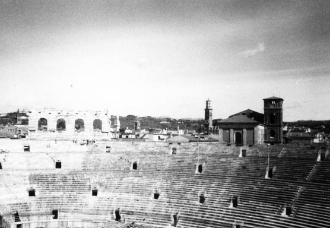
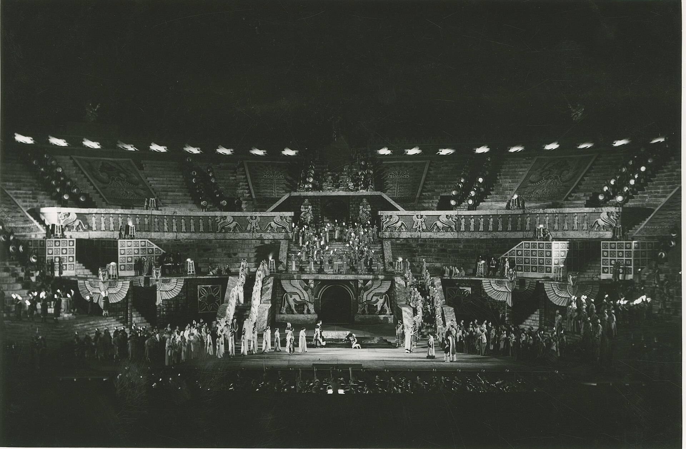

公元 1 世纪上半叶建成的罗马圆形竞技场，比罗马斗兽场还早约 50 年。容纳约 3 万观众、椭圆 152 x 123 米--规模小于斗兽场，却是全世界保存最完好、且唯一仍在举办歌剧季的罗马竞技场：每年 6-8 月，两万名观众坐在两千年前的石阶上看《阿依达》。
看点路线
Il Percorso
- 1先绕外圈看“幸存的翅膀”：四层拱廊只有一侧完好--1117 年大地震的结果
- 2入场后沿拱廊登顶：石阶层层叠叠，找 12 世纪的砖补
- 3内部俯瞰中央场地：今夏歌剧季的舞台地基
- 4不赶时间就傍晚来：夕阳把粉白色大理石墙染金
建筑看点
L'Arena · 6 个两千年细节

“翅膀”：幸存的四层拱廊
竞技场外圈本有完整的四层拱廊，1117 年大地震震塌了大部分--只有这一侧“翅膀”幸存。罗马的 Valleverde 粉白石灰华让它至今颜色柔和。看拱廊间的砖补：中世纪与 20 世纪的修复痕迹在墙上分层可见。
石阶层层
观众席全部用瓦隆石灰华与砖砌成，坐感依然冰凉。最便宜的顶层石阶叫 summa cavea--两千年前的“山顶位”，如今是歌剧节 €30 档的 gradinata。带个坐垫，是所有攻略共同的忠告。
不用麦克风的声学
竞技场的椭圆结构让舞台上的声音不经麦克风直达顶层石阶：指挥 Herbert von Karajan 曾在无扩音状态下测试，结果震惊声乐界。今天的歌剧季演出仍不完全依赖扩音--两千年前的建筑声学仍在服役。
中世纪的“多功能厅”
罗马衰落后，竞技场先后当过市场、斗牛场、比武场甚至贫民窟--店铺和住房直接盖进了拱廊。19 世纪初拿破仑下令清理，建筑才重新“裸露”出来。看墙上曾被开成门窗的洞：那是几个世纪“民用”的疤痕。

歌剧节的舞台
1913 年 8 月 10 日，为纪念威尔第诞辰百年，《阿依达》在此开演--世界最大露天歌剧节由此诞生。这张 1958 年《纳布科》的历史照片记录了当年的盛装观众。如今每个歌剧季落幕时，全场手机灯与打火机亮起，唱《Nessun dorma》。
2026 冬奥会闭幕式
米兰-科尔蒂纳冬奥会把闭幕式选址于此--一座罗马竞技场为现代奥运收官，这是它两千年履历的最新一行。你在 10 月看到的场地，半年前刚办过奥运会的场地转换。
历史故事
Le Storie
壹仍在使用的两千年
维罗纳竞技场是世界罗马竞技场中唯一一个"至今仍在举办演出"的：每年 6-8 月的歌剧季动用两万座位、数百名演员。你白天参观的石阶，晚上就坐满穿晚礼服的观众。
其他竞技场（罗马、阿尔勒、波拉）都成了"只用来看"的遗迹，只有维罗纳的从未退休--从角斗到歌剧，功能换了，但"看台一直在用"从未变过。
贰1117：大地震与"翅膀"
1117 年 1 月 3 日的大地震几乎摧毁了维罗纳全城--竞技场外圈的四层拱廊大部分坍塌，只留下东侧的一段"翅膀"。
震后没有重建外圈，人们干脆用塌下来的石料去修房子。今天看到"只有一层皮"的竞技场，其实是中世纪"回收利用"的结果--废墟不是保留原状，是被用掉了一半。
叁比罗马斗兽场还早 50 年
维罗纳竞技场建于公元 30 年前后，比罗马斗兽场（公元 70-80 年）早约 50 年。它是罗马石造竞技场的"第一代"--工程师还在摸索椭圆结构与拱廊的极限。
正因为是"早期型号"，它的规模更紧凑（3 万 vs 罗马 5-8 万），石砌更厚实。这反而成了保存优势：小而结实的建筑比大而复杂的更能扛过地震与千年的"建材回收"。
肆1913：歌剧节的诞生
1913 年 8 月 10 日，为纪念威尔第诞辰 100 周年，男高音 Zenatello 与指挥家 Zandonai 在竞技场排演了《阿依达》--两万名观众坐在两千年前的石阶上听歌剧。这是世界露天歌剧节的开端。
此后百余年里除两次世界大战短暂中断外，歌剧季年年上演。2020 年新冠期间曾改办"无声歌剧"（观众戴耳机坐在空场中）-- tradition 的另一种坚持。
伍石阶的"冷酷"
歌剧季最便宜的座位叫 gradinata：直接坐在罗马石阶上。三小时的《图兰朵》下来，尾椎骨的记忆比剧情更持久。
现场出租坐垫（€3-5），也可以自带。看台的老观众都有各自的"装备学"：坐垫 + 薄毯（夜里山风）+ 小望远镜。剧场规则：顶层 gradinata 区着装随意（短裤拖鞋常见），前排 poltronissima 区则是晚礼服的世界。
陆拿破仑的"清理令"
中世纪与近代，竞技场内部与拱廊被民居和店铺占据--是一个"住在文物里的贫民窟"。1805 年前后拿破仑的军队进驻后，下令清空内部住户。
这次"粗暴的清理"反而让竞技场重见天日。此后历次修复（1850s 的砖补、1980s 的加固）都以"裸露"为基调。今天看到干净的结构体，是两百年"做减法"的结果。
柒声学奇迹
竞技场的椭圆碗形让演员的声音不经麦克风直达每一层石阶。1950 年代的一次测试中，指挥在无扩音状态下让顶层观众听到了全部细节。
今天的歌剧季只对乐队与人声做"轻度补声"（演出法规定），主声学仍是建筑本身的。坐在顶层石阶上闭眼听一段：《饮酒歌》的合唱从场中央升起来，与两千年前的角斗士号角走的是同一条声线。
捌2026 冬奥闭幕式
2026 年米兰-科尔蒂纳冬奥会把闭幕式选在维罗纳竞技场--这是历史上第一次，冬奥会仪式走进一座罗马竞技场。
从公元 30 年的角斗到 2026 年的全球直播：一座建筑的"功能履历"跨越了两千年。你在 10 月走进的场地，半年前刚完成了奥运级的转场。
玖"阿依达"与它的埃及
为什么 1913 年选《阿依达》开幕？因为这部威尔第歌剧讲的是埃及故事，场景宏大（有凯旋进行曲的整支军队上场），最适合竞技场的尺度--从此《阿依达》成为维罗纳的"保留曲"。
更妙的巧合：竞技场本名 Anfiteatro，最初落成时的开幕表演据说就是一场"猎兽表演"--从野兽到埃及军队到高清投影的舞台美术，升级了两千年。
拾白天的竞技场 vs 夜晚的
白天参观看到的是"建筑":拱廊、石阶、修复痕迹。夜晚歌剧季的竞技场是"剧场"：舞台布景高过外墙、灯光把石阶染成金色。
如果只能选一种体验：白天看建筑，不如夜晚看一场 gradinata 顶档的歌剧。哪怕不歌剧迷，《卡门》或《纳布科》的场面也会让你理解"为什么要来维罗纳"。
10 月无歌剧季，但 Piazza Bra 的灯光打在竞技场外墙的夜景仍然值得一看。
参观贴士
Consigli Pratici
- 入场 €10 含登拱廊；持 Verona Card 有折扣
- 歌剧季（6-8 月）演出日白天参观时段可能压缩，出发前查官网日历
- 石阶无靠背：参观 30 分钟没问题，看歌剧务必租坐垫（现场 €3-5）
- 看歌剧最超值的是 gradinata 顶档（€30-50）：音效最好、视野最全，只是要坐三小时石头
- 傍晚入场光线最美；Piazza Bra 一圈的餐厅价格随广场距离递减，往Via Roma 方向走两分钟即半价
顺路同游
Da Non Perdere